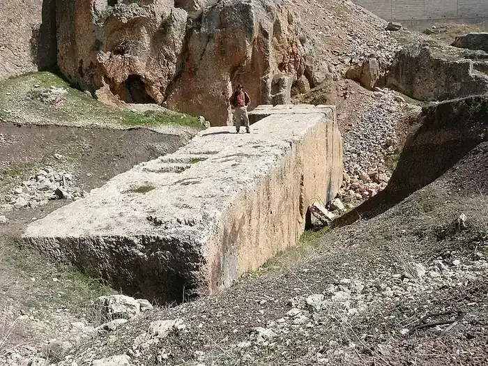
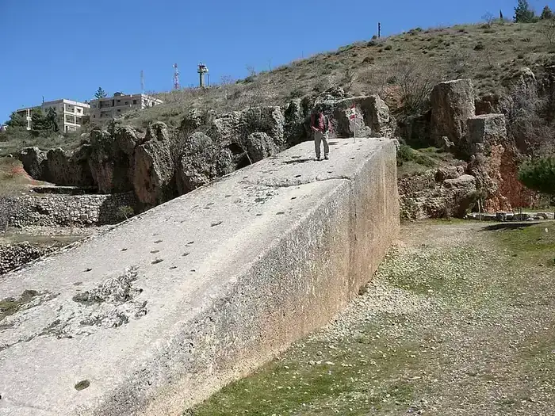
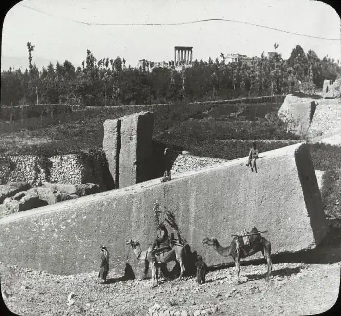

The stones
The podium of the temple of Jupiter at Baalbek, in Lebanon, includes the trilithon: three limestone blocks of roughly 800 tonnes each, set side by side in a course about 5 metres high. A fourth stone still in the nearby quarry, the Stone of the Pregnant Woman, is heavier still at around 1,000 tonnes.
Maps, diagrams and images






They are, by a wide margin, the largest blocks used in classical antiquity, which is why the site attracts the claim that no ancient people could have moved them.
The documented answer
The quarry is adjacent, the stone is local, and the blocks carry quarry marks and unfinished edges that show how they were cut. Roman engineering used levers, rollers, sledges, ramps and large teams; experiments with replicas have moved comparable masses with those methods. The trilithon sits in a Roman temple complex with inscriptions, a plan and a construction sequence.
The giant claim has no independent evidence: no bones, no tools of unusual size, no ancient text describing giants as builders. It is an argument from the observer's surprise, and surprise is not a datum.
Documented: the stones exist, are Roman-period, and were quarried metres away.
Documented: the methods available to Roman engineers can move masses of that order.
Not documented: any involvement of giants, or any culture other than the Roman one.
The reasoning error: 'I cannot imagine how' is not evidence that nobody could.
Why it persists: because the stones are genuinely astonishing, and astonishment is a better story than a ramp.
Why it is in the archive
Because it is the cleanest case of the argument from incredulity in the whole collection, and because the answer is not a dismissal — the Romans really did do something extraordinary here, and the quarry marks are still visible.
Open resources on this topic
- PapersOpen-access articles: DOAJ · PubMed Central · Internet Archive Scholar
- BooksPublic-domain and borrowable copies: Open Library · Project Gutenberg · Google Books · Internet Archive
More images
Cite this page
Momin, S. (2026). Baalbek and the Giants. The Larger World Archive. https://drsamonline.github.io/LARGE_GLOBE/baalbek-giants.htmlMomin, Sohil. “Baalbek and the Giants.” The Larger World Archive, 2026, https://drsamonline.github.io/LARGE_GLOBE/baalbek-giants.html.Momin, Sohil. “Baalbek and the Giants.” The Larger World Archive, 2026. https://drsamonline.github.io/LARGE_GLOBE/baalbek-giants.html.@misc{baalbek2026baalbek,
author = {Momin, Sohil},
title = {Baalbek and the Giants},
year = {2026},
howpublished = {The Larger World Archive},
url = {https://drsamonline.github.io/LARGE_GLOBE/baalbek-giants.html},
note = {Last reviewed 20 November 2026}
}Last reviewed 20 November 2026 · Corrections policy · this page is not peer reviewed
Sources for this page
- Wikipedia, “Baalbek” — the site, the temples and the stonesen.wikipedia.org
- Wikipedia, “Trilithon” — the three stones and their scaleen.wikipedia.org
- Wikipedia, “Roman engineering” — the methods availableen.wikipedia.org
- Wikipedia, “Argument from incredulity” — the reasoning the claim rests onen.wikipedia.org